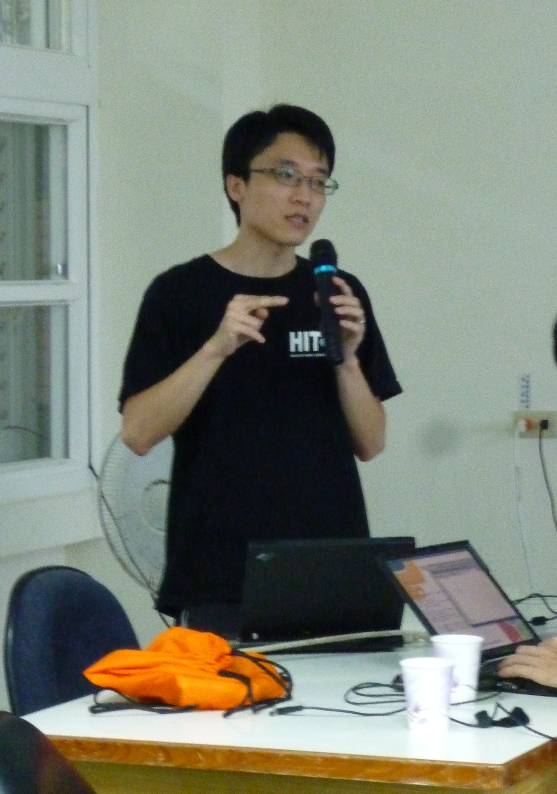

Hacking Summer Camp－邊玩邊學的自由軟體夏令營

▲圖1：大溪國小校門口。
每到暑假，總是有許多遊客前往宜蘭頭城的大溪國小，享受它依山傍海、毗鄰沙灘的明媚風光。今年 (2011) 7 月 15 日至 17 日，在坐落於海邊的開放式校園中，聚集了愛好自由軟體的各界朋友，一起共襄盛舉，舉辦了「Hacking Summer Camp 自由軟體夏令營」。Hacking Summer Camp 是由教育部校園自由軟體數位資源推廣服務中心 (OSSACC)，以及中央研究院資訊科技創新研究中心自由軟體鑄造場 (OSSF) 共同舉辦，同時邀請許多自由軟體社群朋友一同參與議程內容的規劃，並且親自分享自由軟體開發心得，來傳承經驗及知識。
與一般夏令營不同之處在於，Hacking Summer Camp 可說是有各方英雄好漢共同參與。除了學生之外，還包括對自由軟體有興趣的國中小老師以及社群成員。白天一早開始的課程在大溪國小的會議室進行，有豐富開發經驗的社群朋友向學生及老師講解技術問題，傳授如何參與專案，分享開發經驗；下午接近傍晚的時段則安排了衝浪等水上活動，讓大家能夠暫時將視線離開螢幕，享受陽光、沙灘及浪花。在晚餐後到就寢的時段，大家仍不停歇，繼續分享知識，在榻榻米上分組圍成圈圈，進行實作開發。

▲圖2：透過晚上的實作開發，社群跟學生們有更深入的交流與互動。

▲圖3：自由軟體夏令營除了技術課程還有戶外活動，衝浪是大家最期待的戶外活動。
Hacking Summer Camp 的發想源自於 OSSACC 執行秘書，人稱 Eric 的孫賜萍。Eric 看到台灣參與國際專案計劃核心的人並不多，而自由軟體在地化的工作只能靠本地人獨自努力完成。他感慨的說，我再怎麼努力，我的一天也只有 24 小時，我再怎麼有體力，也沒有像參與的大學生有體力。就算我每個星期四參加 Hacking Thursday 的聚會，我也不可能像成員們一樣厲害。因此 Eric 便興起了舉辦這次交流活動的念頭，希望把有能力跟有潛力的人湊在一起，讓更多人一起加入參與自由軟體專案的行列。
夏令營的議程規劃由主辦單位邀請 Hacking Thursday 社群共同安排議程，並由社群代表 Rex（蔡志展）執行。此次在挑選議程時還特別加入學生的意見，詢問每個技術講題的難易與否以及有趣程度，然後挑選出合適的技術講題。如此一來講師能在台上分享自己專精的主題，台下學生也會更願意主動學習，雙方產生共鳴，得以激發更多的思考與討論。自由軟體所追求的相互交流之精神莫過於此。
除了有 Lazyscripts、ibus-chewing、Python-GTK 等技術講題之外，在這次議程中也安排了如何合作專案和自由軟體中文化開發歷史這類不同面向的講題。講師 Rex的講題－自由軟體專案參與，讓學生知道社群成員平時在玩自由軟體專案時是如何合作、要注意哪些事情；講師小蟲（鄭原忠）的 free talk 經驗談，講述過往自己在參與自由軟體中文化的經過，希望把自由軟體的精神帶給在場的大學生。講者之一同時也是課程安排的負責人 Rex 說，或許這兩天的課程無法帶給學生在技術層面上顯著的進步，但此活動最重要的是社群與學生之間精神的傳承。

▲圖4：講師小蟲是台灣自由軟體社群的代表人物之一，最為人所知的貢獻為領導 Linux 中文延伸套件計劃 (CLE)。這次特別來到現場與大家分享他當初投入自由軟體中文化的經驗及歷史。
台大資工系學生 Rock 說，而最令他印象最深的講題是 Ant（曾義峰）的 SVN 版本控制－以 RPGJS 為例，他表示：「講師厲害的地方在於，運用簡潔的幾行程式碼整合了很多簡單的小技巧，來做出與眾不同的東西，很適合初學者來學習與運用。」跟高手近距離接觸、相處，未來遇到相關的技術問題也比較知道要找誰問。而在非技術講題的部份，Rock 也說，聽到小蟲老師分享他的人生歷練與自由軟體中文化發展的歷史也覺得很有意思，聽完才了解要感謝前輩的付出。因為前輩們在軟體中文化方面盡了相當大的努力，現在的人才有辦法使用這麼方便的中文自由軟體資源。

▲圖5：講師 Ant 的 SVN 版本控制－以 RPGJS 為例，內容精彩有趣，引起台下聽眾許多共鳴。
有別於學校正規教育，夏令營形式的授課方式相較之下輕鬆且自由，而自由軟體社群展現他們特有的協作精神以及主動追求進步的學習態度，經過這幾天充分的與台下聽眾互動交流，也讓在場的學生、國中小老師體驗到另一種知識交流的方式。文德國小陳國全老師表示，講師追求技術上的努力與精進，並願意來到這裡將知識傳承下去，這種自由軟體社群精神是很難能可貴的。

▲圖6：中小學老師們也在此次夏令營的交流中有不少技術上的收穫。
其實類似的自由軟體夏令營活動以前就曾舉辦過，但對於主辦者 OSSACC 以及 OSSF 來說，舉辦夏令營形式的活動算是第一次，未來能發揮的空間非常大。「夏令營比起在電腦教室裡的工作坊，不僅更能讓學生產生興趣，與開發者長時間的近距離接觸，也讓學習變得更容易；社群朋友透過夏令營，接觸莘莘學子激發創意，一邊度假、一邊傳授開發經驗，也是一大樂事。」OSSF 的 Richard（林珈宏）表示：「這是我們第一次合作舉辦 Hacking Summer Camp，所以也算是從做中學。如果今年試辦做的不錯，明年也希望有機會可以繼續做下去。」
社群精神就是對自己有興趣的專案熱情投入並主動學習，講師 hychen（陳信屹）說：「如果以後續辦的話可以考慮減少既定講題，直接在現場由台下決定想要聽什麼，或是當場組一個小 project，然後在場的人一起 coding、一起完成。」有別於演講一對多的授課方式，多一點互動式的經驗傳承會更好。
短短三天的活動，學生、中小學老師、社群朋友朝夕相處，從不認識到熟悉彼此的身影，大夥一起學習、一起衝浪，並且加上大溪國小的陽光、沙灘及浪花的陪伴，這趟不一樣的自由軟體學習之旅讓大伙的腦袋裡不止多了些自由軟體新知識、新體悟，還多了滿滿的美好回憶。活動宣佈結束，腦中的轉變會是最棒的紀念品。

▲圖7：一起烤肉讓大家的心更加貼近。

▲圖8：有大溪國小的陽光、沙灘及浪花的陪伴，使這趟自由軟體學習之旅留下許多美麗回憶。
您也許有興趣閱讀以下文章:
- 把開發當興趣的開發者聚會－Hacking Thursday - 2011-06-10